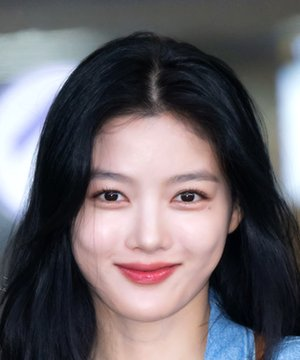

KIM YOO-JUNG

ABOUT THE ACTOR
- Kim You-jung (Korean: 김유정; born September 22, 1999) is a South Korean actress. She debuted as a model for a confectionery brand at the age of four.[2]
- After her acting debut in 2003, she became one of the most in-demand child actresses in Korea
- She gained public attention for starring in television series Dong Yi (2010), Moon Embracing the Sun (2012), May Queen (2012), Golden Rainbow (2013), Secret Door (2014) and Angry Mom (2015). She also starred in the films Commitment (2013), Thread of Lies (2014), and Circle of Atonement (2015). She hosted music show Inkigayo from November 2014 to April 2016.
- Kim has been nicknamed "Nation's Little Sister" after playing various child roles and "Sageuk fairy" after taking roles in several acclaimed historical dramas in her career.[3][4] S
- She also gained the nicknames "Nation's First Love" and "Global First Love" following her well-loved performance in 20th Century Girl